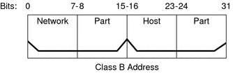
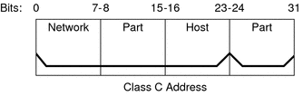

|
|||
|
1. Solaris TCPIP Protocol Suite (Overview) 2. Planning an IPv4 Addressing Scheme (Tasks 3. Planning an IPv6 Addressing Scheme (Overview) 4. Planning an IPv6 Network (Tasks) 5. Configuring TCP/IP Network Services and IPv4 Addressing (Tasks) 6. Administering Network Interfaces (Tasks) 7. Enabling IPv6 on a Network (Tasks) 8. Administering a TCP/IP Network (Tasks) 9. Troubleshooting Network Problems (Tasks) 10. TCP/IP and IPv4 in Depth (Reference) inetd Internet Services Daemon Network Databases and the nsswitch.conf File Routing Protocols in the Solaris OS 12. About Solaris DHCP (Overview) 13. Planning for DHCP Service (Tasks) 14. Configuring the DHCP Service (Tasks) 15. Administering DHCP (Tasks) 16. Configuring and Administering DHCP Clients 17. Troubleshooting DHCP (Reference) 18. DHCP Commands and Files (Reference) 19. IP Security Architecture (Overview) 21. IP Security Architecture (Reference) 22. Internet Key Exchange (Overview) 24. Internet Key Exchange (Reference) 25. Solaris IP Filter (Overview) 28. Administering Mobile IP (Tasks) 29. Mobile IP Files and Commands (Reference) 30. Introducing IPMP (Overview) 31. Administering IPMP (Tasks) Part VI IP Quality of Service (IPQoS) 32. Introducing IPQoS (Overview) 33. Planning for an IPQoS-Enabled Network (Tasks) 34. Creating the IPQoS Configuration File (Tasks) 35. Starting and Maintaining IPQoS (Tasks) 36. Using Flow Accounting and Statistics Gathering (Tasks) |
Network ClassesNote - Class-based network numbers are no longer available from the IANA, though many older networks are still class-based. This section provides details about IPv4 network classes. Each class uses the 32-bit IPv4 address space differently, providing more or fewer bits for the network part of the address. These classes are class A, class B, and class C. Class A Network NumbersA class A network number uses the first 8 bits of the IPv4 address as its “network part.” The remaining 24 bits contain the host part of the IPv4 address, as the following figure illustrates. Figure 10-3 Byte Assignment in a Class A AddressThe values that are assigned to the first byte of class A network numbers fall within the range 0–127. Consider the IPv4 address 75.4.10.4. The value 75 in the first byte indicates that the host is on a class A network. The remaining bytes, 4.10.4, establish the host address. Only the first byte of a class A number is registered with the IANA. Use of the remaining three bytes is left to the discretion of the owner of the network number. Only 127 class A networks exist. Each one of these numbers can accommodate a maximum of 16,777,214 hosts. Class B Network NumbersA class B network number uses 16 bits for the network number and 16 bits for host numbers. The first byte of a class B network number is in the range 128–191. In the number 172.16.50.56, the first two bytes, 172.16, are registered with the IANA, and compose the network address. The last two bytes, 50.56, contain the host address, and are assigned at the discretion of the owner of the network number. The following figure graphically illustrates a class B address. Figure 10-4 Byte Assignment in a Class B AddressClass B is typically assigned to organizations with many hosts on their networks. Class C Network NumbersClass C network numbers use 24 bits for the network number and 8 bits for host numbers. Class C network numbers are appropriate for networks with few hosts—the maximum being 254. A class C network number occupies the first three bytes of an IPv4 address. Only the fourth byte is assigned at the discretion of the network owners. The following figure graphically represents the bytes in a class C address. Figure 10-5 Byte Assignment in a Class C AddressThe first byte of a class C network number covers the range 192–223. The second and third bytes each cover the range 1– 255. A typical class C address might be 192.168.2.5. The first three bytes, 192.168.2, form the network number. The final byte in this example, 5, is the host number. |
||
|